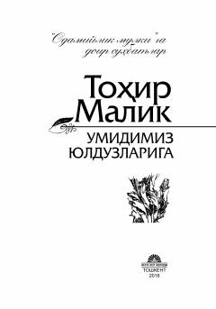

UYO'smirlar uchun axloq-odob va hayotiy qadriyatlar haqidagi tarbiyaviy suhbatlar to'plami.
Ushbu asar yozuvchi Tohir Malikning o'smir yoshlar uchun mo'ljallangan axloqiy-tarbiyaviy suhbatlaridan iborat. Kitobda yoshlarning o'tish davri, mustaqil shaxs sifatida shakllanishi, ota-ona va ustozlar bilan munosabatlari hamda hayotiy qadriyatlar haqida so'z boradi.